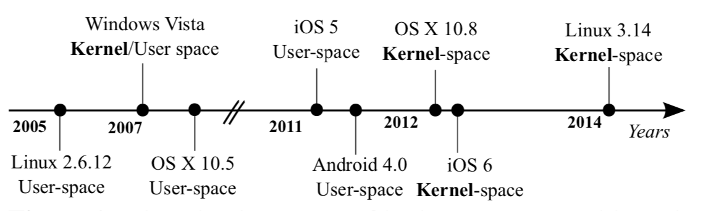
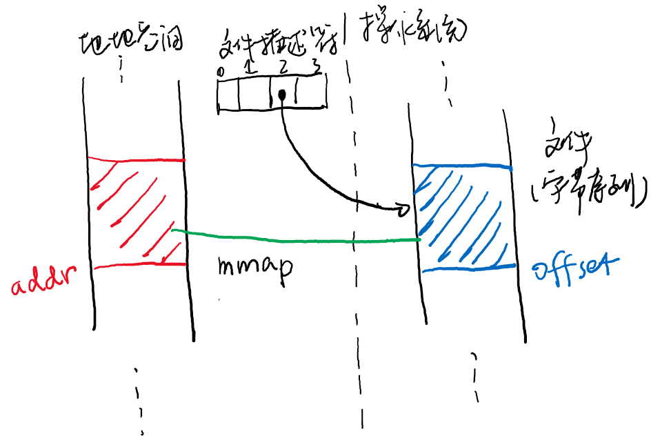

<html>
  <Head>
<meta http-equiv="Content-Type" content="text/html; charset=utf-8">

    
<link rel="stylesheet" href="../static/css/bootstrap.min.css"/>
<link rel="stylesheet" href="../static/css/bootstrap-theme.min.css"/>


    <link rel="stylesheet" href="../static/css/fonts/crmison.css"/>
    <link rel="stylesheet" href="../static/css/fonts/fira_code.css"/>
    <link rel="stylesheet" href="../static/css/fonts/ptsans.css"/>
    <link rel="stylesheet" href="../static/css/katex.min.css"/>
    <link rel="stylesheet" href="../static/css/wiki.css"/>
    <link rel="stylesheet" href="../static/css/codehilite.css"/>

    <script src="../static/js/jquery.min.js"></script>
    <script src="../static/js/bootstrap.bundle.min.js"></script>
    <script src="../static/js/katex.min.js"></script>
    
    

    <title>虚存抽象</title>
  </Head>
  <body>
   
   
<nav class="navbar fixed-top navbar-expand-lg navbar-dark bg-dark">
  <a class="navbar-barnd" href="index.html">Yanyan's Wiki</a>
  <div class="collapse navbar-collapse">
    <div class="navbar-nav">
      <a class="nav-item nav-link active" href="OS2020.html">
        
        操作系统 (2020)</a>
      <a class="nav-item nav-link active" href="SysLab2020.html">
        计算机系统综合实验 (2020)</a>
      <a class="nav-item nav-link active" href="ICS_NJU.html"> 加入我们</a>
    </div>
    <form class="form-inline" autocomplete="off">
      <input id="token-input" type="text" oninput="login();" maxlength="16"
        data-toggle="tooltip" data-placement="bottom"
        title="用于确定身份的作业提交 SHA-1 hash digest。更改后回车或刷新网页生效"></input>
    </form>
  </div>
</nav>

<center>
  <div class="article-container">
    <div class="article">
      <h1 id="_1">虚存抽象</h1>
<div markdown="1"><div class="fenced fenced-blue"><div>
<h4 id="_1">本讲阅读材料</h4>
<p><a href="http://pages.cs.wisc.edu/~remzi/OSTEP/">教科书 (Operating Systems: Three Easy Pieces, OSTEP)</a> 第 13—20 章。忽然有很多教科书要读，不过这是因为 OSTEP 力图做到 self-contained，其中很多内容已经是大家学过或之前上课已经讲过的 (15-19 章)，你读起来应该就像是在复习。</p>
<p>课后习题：</p>
<ul>
<li>阅读 <code>mmap</code>, <code>munmap</code>, <code>msync</code>, <code>mprotect</code> 系统调用的手册；</li>
<li>试着用 <code>mmap</code> 把文件映射到内存，并进行一些读写操作。映射设备文件 (如磁盘) 时要非常谨慎 (例如，推荐以只读的方式映射) 以免对你的计算机造成不可逆转的伤害。</li>
</ul>
</div></div></div>

<h2 id="_2">进程的地址空间</h2>
<p>把进程看作是状态机，状态中的 <math class="inline-math">M</math> (内存部分) 是怎么表示的呢？那么问题来了：进程眼中的内存到底长什么样呢？为了回答这个问题，就需要回到 “什么是程序” 上——程序的执行需要内存里有什么？顺着这个思路，不难得到地址空间里应该有的东西：</p>
<ol>
<li>程序的<strong>代码</strong>和<strong>数据</strong>。代码可以是只读的；数据也有很多种，例如字符串常量 (你可以试试把一个字符串强制类型转换成 <code>char *</code>，然后修改它)，例如全局变量 (在全局作用域定义的 <code>int x;</code>)，以及动态分配内存的区域 (例如 <code>malloc()</code> 的返回值)。</li>
<li>程序执行的<strong>堆栈</strong>。堆栈是实现函数调用必不可少的，虽然原则上并不需要，但既然指令集里有了这个概念，总要为它分配空间。</li>
<li>动态链接库的<strong>代码</strong>和<strong>数据</strong>。动态链接库不需要堆栈，为什么？</li>
</ol>
<p>除此之外，现代操作系统还玩了一个非常有趣的小 trick：<strong>操作系统的代码和数据也映射到进程的地址空间中</strong>，只是进程无权访问。这么做有非常明显的好处：当进程请求操作系统运行 (系统调用) 或中断到来时，不需要切换虚拟地址空间就能执行操作系统代码，而操作系统代码执行后就能直接访问进程的地址空间 (例如我们执行 <code>read(fd, buf, size)</code> 的时候，操作系统代码立即就能访问 <code>buf</code>)。通过硬件的访问权限管理，进程一旦访问属于操作系统的内存，就会触发非法操作，由操作系统杀死。</p>
<h2 id="linux">Linux 进程的地址空间</h2>
<p>回到进程眼中的内存：无论是代码、数据、bss、堆区、栈区、操作系统……这些空间通常都是连续的，想办法把它们排在地址空间里就行了。操作系统也为我们提供了工具，查看某个地址空间：</p>
<div class="codehilite"><pre><span></span>./a.out <span class="p">&</span> // 后台运行一个程序
pmap <span class="nv">$!</span>   // 使用pmap命令查看进程地址空间信息
</pre></div>


<p>例如，一个静态链接的 C 程序的 pmap 输出结果：</p>
<div class="codehilite"><pre><span></span>0000000000400000    728K r-x-- a.out
00000000006b6000     24K rw--- a.out
00000000006bc000      4K rw---   [ anon ]
0000000000fa4000    140K rw---   [ anon ]
00007ffed8844000    132K rw---   [ stack ]
00007ffed8928000     12K r----   [ anon ]
00007ffed892b000      8K r-x--   [ anon ]
ffffffffff600000      4K r-x--   [ anon ]
</pre></div>


<p>如果想自己实现一个 pmap，我们可以用 ltrace/ptrace 把它 “拆开”，看看它到底做了什么获得了进程的地址空间信息：</p>
<div class="codehilite"><pre><span></span>$ strace pmap $!
...
openat(AT_FDCWD, "/proc/2078/maps", O_RDONLY) = 3
fstat(3, {st_mode=S_IFREG|0444, st_size=0, ...}) = 0
read(3, "00400000-004b6000 r-xp 00000000 "..., 1024) = 614
</pre></div>


<p>经过一些观察，不难发现是 procfs 里有这个信息！感谢 Everything is a file, procfs 把操作系统内进程的信息作为文件暴露给了操作系统的其他部分。这样我们也可以实现一个自己的 pmap 了。言归正传，procfs 里提供的 maps 信息，比 pmap 还要多一些：</p>
<div class="codehilite"><pre><span></span>00400000-004b6000 r-xp 00000000 08:02 2359313              /tmp/a.out
006b6000-006bc000 rw-p 000b6000 08:02 2359313              /tmp/a.out
006bc000-006bd000 rw-p 00000000 00:00 0 
00fa4000-00fc7000 rw-p 00000000 00:00 0                    [heap]
7ffed8844000-7ffed8865000 rw-p 00000000 00:00 0            [stack]
7ffed8928000-7ffed892b000 r--p 00000000 00:00 0            [vvar]
7ffed892b000-7ffed892d000 r-xp 00000000 00:00 0            [vdso]
ffffffffff600000-ffffffffff601000 r-xp 00000000 00:00 0    [vsyscall]
</pre></div>


<p>不难理解 (和验证) 的是：</p>
<ul>
<li>00400000-004b6000 的只读、可执行的部分是 a.out 的代码和只读数据；</li>
<li>006b6000-006bc000 的可读写部分是 a.out 的静态数据；</li>
<li>剩下已经有名字的部分：heap 是堆区，stack 是栈区。</li>
</ul>
<p>在数据区之后，我们一个猜测是 006bc000-006bd000一段匿名区域是 bss 节，它的大小 (内存映射以页面为单位，刚好一个页面) 和位置 (位于数据节之后) 刚好符合。</p>
<div markdown="1"><div class="fenced fenced-green"><div>
<h4 id="_1">如何验证这个猜想？</h4>
<p>我们可以使用一些系统工具 (例如readelf)，或者自己写程序来验证上述猜测 (例如利用 end 符号，或者干脆定义一个大一些的未初始化静态数组)。有兴趣的同学不妨试试。</p>
</div></div></div>

<p>对于动态链接程序，也是类似的，只是每一个动态链接库都有代码、数据、bss，但进程中只有一个堆区和一个堆栈：</p>
<div class="codehilite"><pre><span></span>55dd6c01b000-55dd6c01c000 r-xp 00000000 08:02 2359313     /tmp/a.out
55dd6c21b000-55dd6c21c000 r--p 00000000 08:02 2359313     /tmp/a.out
55dd6c21c000-55dd6c21d000 rw-p 00001000 08:02 2359313     /tmp/a.out
7fc8ca48e000-7fc8ca675000 r-xp 00000000 08:02 5772000     /lib/x86_64-linux-gnu/libc-2.27.so
7fc8ca675000-7fc8ca875000 ---p 001e7000 08:02 5772000     /lib/x86_64-linux-gnu/libc-2.27.so
7fc8ca875000-7fc8ca879000 r--p 001e7000 08:02 5772000     /lib/x86_64-linux-gnu/libc-2.27.so
7fc8ca879000-7fc8ca87b000 rw-p 001eb000 08:02 5772000     /lib/x86_64-linux-gnu/libc-2.27.so
7fc8ca87b000-7fc8ca87f000 rw-p 00000000 00:00 0 
7fc8ca87f000-7fc8ca8a6000 r-xp 00000000 08:02 5771988     /lib/x86_64-linux-gnu/ld-2.27.so
7fc8caa91000-7fc8caa93000 rw-p 00000000 00:00 0 
7fc8caaa6000-7fc8caaa7000 r--p 00027000 08:02 5771988     /lib/x86_64-linux-gnu/ld-2.27.so
7fc8caaa7000-7fc8caaa8000 rw-p 00028000 08:02 5771988     /lib/x86_64-linux-gnu/ld-2.27.so
7fc8caaa8000-7fc8caaa9000 rw-p 00000000 00:00 0 
7ffe38768000-7ffe38789000 rw-p 00000000 00:00 0           [stack]
7ffe38795000-7ffe38798000 r--p 00000000 00:00 0           [vvar]
7ffe38798000-7ffe3879a000 r-xp 00000000 00:00 0           [vdso]
ffffffffff600000-ffffffffff601000 r-xp 00000000 00:00 0   [vsyscall]
</pre></div>


<p>非常有趣的是，堆区和 bss 节都没有了！当然其实还是有的。如果我们声明足够大的内存空间，地址空间里就会有 bss 和堆区，例如在静态/动态时各分配 1 GiB 的内存后的地址空间后 pmap 的结果 (pmap 的结果对人类更友好一些)：</p>
<div class="codehilite"><pre><span></span>0000556e701c2000       4K r-x-- a.out
0000556e703c2000       4K r---- a.out
0000556e703c3000       4K rw--- a.out
0000556e703c4000 1048576K rw---   [ anon ] # bss
0000556eb0899000     132K rw---   [ anon ] # heap
00007ff0fb664000 1048580K rw---   [ anon ] # another heap
00007ff13b665000    1948K r-x-- libc-2.27.so
00007ff13b84c000    2048K ----- libc-2.27.so
00007ff13ba4c000      16K r---- libc-2.27.so
00007ff13ba50000       8K rw--- libc-2.27.so
00007ff13ba52000      16K rw---   [ anon ]
00007ff13ba56000     156K r-x-- ld-2.27.so
00007ff13bc68000       8K rw---   [ anon ]
00007ff13bc7d000       4K r---- ld-2.27.so
00007ff13bc7e000       4K rw--- ld-2.27.so
00007ff13bc7f000       4K rw---   [ anon ]
00007ffed7608000     132K rw---   [ stack ]
00007ffed7722000      12K r----   [ anon ]
00007ffed7725000       8K r-x--   [ anon ]
ffffffffff600000       4K r-x--   [ anon ]
</pre></div>


<p>在这个例子里我们还看到，heap 的内存是不连续的——有一部分被标记为了传统的 UNIX heap，但 1 GiB 的内存空间实际是在地址空间的另外的位置分配的。</p>
<div markdown="1"><div class="fenced fenced-green"><div>
<h4 id="_1">谁决定了堆区在哪里？</h4>
<p>延伸阅读: glibc <a href="https://sourceware.org/glibc/wiki/MallocInternals">Malloc Internals</a>：</p>
<ul>
<li>If the request is large enough, <code>mmap()</code> is used to request memory directly from the operating system. Note that the threshold for mmap'ing is dynamic, unless overridden by  <code>M_MMAP_THRESHOLD</code> (see  <code>mallopt()</code> documentation), and there may be a limit to how many such mappings there can be at one time.</li>
</ul>
<p>此外因为 bss 里刚好是 1GB 的内存，因此 bss 恰好是 1048576KB；但 malloc/free 需要额外记录分配信息，因此分配了多一页的 (1048580KB) 内存。</p>
</div></div></div>

<p>此外，如果你多次运行同一个程序，你会发现地址空间中各个部分的地址大体相同 (处于同一范围)，但具体的值每次都不同，例如多次运行 ldd 查看程序的动态链接信息：</p>
<div class="codehilite"><pre><span></span>$ ldd ./a.out
    linux-vdso.so.1 (0x00007ffe335bc000)
    libc.so.6 =&gt; /lib/x86_64-linux-gnu/libc.so.6 (0x00007fe0a408f000)
    /lib64/ld-linux-x86-64.so.2 (0x00007fe0e4682000)
$ ldd ./a.out
    linux-vdso.so.1 (0x00007fffc7dcb000)
    libc.so.6 =&gt; /lib/x86_64-linux-gnu/libc.so.6 (0x00007f4354ac6000)
    /lib64/ld-linux-x86-64.so.2 (0x00007f43950b9000)
$ ldd ./a.out
    linux-vdso.so.1 (0x00007ffc90bf3000)
    libc.so.6 =&gt; /lib/x86_64-linux-gnu/libc.so.6 (0x00007f7046bd2000)
    /lib64/ld-linux-x86-64.so.2 (0x00007f70871c5000)
</pre></div>


<p>甚至每次运行程序，代码/数据加载的位置也都不同 (静态链接除外)。这是称为 “Address Space Layout Randomization” 的机制，能够降低缓冲区溢出攻击的成功概率，主流的操作系统在进入 2000s 之后都开始支持 ASLR，甚至 Linux 内核本身的地址也是随机化的——内核中的这些问题一直都是 “越狱” 类型漏洞的重要来源。</p>
<div markdown="1"><div class="fenced fenced-green"><div>
<h4 id="_1">真的吗？</h4>
<p><code>/proc/kallsyms</code> 有内核所有符号的地址，通过这个地址你可以看到内核是如何实现地址空间随机化的。</p>
</div></div></div>

<p></img></p>
<p>有兴趣的同学可以继续阅读一些<a href="https://en.wikipedia.org/wiki/Address_space_layout_randomization">资料</a>，其中提供了很多有趣的参考文献。</p>
<h2 id="_3">管理地址空间的系统调用</h2>
<p>显然，操作系统一定会提供一些 APIs 帮助我们管理进程的地址空间。我们不妨考虑一些典型的场景：</p>
<ul>
<li>实现 <code>dlopen()</code> (用来加载动态链接库，我们之后将会用到)，将一个文件的一部分内容加载到进程的地址空间中</li>
<li>堆栈的自动生长 - 用 <code>ulimit</code> 可以设置进程的堆栈为 “无限大”，从而在程序运行过程中，大量的函数调用 (例如上亿次递归) 时访问的栈地址能被正确分配</li>
<li><code>malloc(32);</code> - 分配一段很小的内存</li>
<li><code>malloc(1024 * 1024 * 1024);</code> - 分配一段非常大的内存</li>
</ul>
<p>管理地址空间的主要系统调用是 mmap 系统调用 (和相应的 munmap)：</p>
<div class="codehilite"><pre><span></span><span class="kt">void</span> <span class="o">*</span><span class="nf">mmap</span><span class="p">(</span><span class="kt">void</span> <span class="o">*</span><span class="n">addr</span><span class="p">,</span> <span class="kt">size_t</span> <span class="n">length</span><span class="p">,</span> <span class="kt">int</span> <span class="n">prot</span><span class="p">,</span> <span class="kt">int</span> <span class="n">flags</span><span class="p">,</span>
  <span class="kt">int</span> <span class="n">fd</span><span class="p">,</span> <span class="kt">off_t</span> <span class="n">offset</span><span class="p">);</span>
</pre></div>


<p>首先让我们来回顾一下操作系统中的对象。所谓对象，就是对数据 (和操作) 的封装——对象数据的部分通常可以看做是一个数组，例如 C 中的一个结构体，而这些对象都可以通过文件被访问。Everything is a file 提供了统一的接口，实现应用程序访问操作系统中的对象，而对文件来说最重要的操作就是 read 和write。</p>
<p>mmap 把文件中的一部分 (由 <code>fd</code> 文件描述符描述，从 <code>offset</code> 开始的 <code>length</code> 字节) “映射” 到地址空间的 <code>addr</code> 位置，并设置保护权限为 <code>prot</code>、映射模式为 <code>flags</code>。</p>
<p></img></p>
<p>精妙！一个 API 就实现了几乎所有的内存管理功能：</p>
<ul>
<li>如果不指定文件描述符，使用 <code>MAP_ANONYMOUS</code> flag (不指定地址)，则相当于内存分配。mmap 可以用来分配很大的内存。在课堂上我们已经展示过，借助分页机制，map 和物理内存一样大的空间瞬间就能完成。</li>
<li>如果指定文件描述符，可以把几乎任何东西映射到地址空间里。这样动态链接库就不必在链接时把文件读取到地址空间了。事实上，对于映射到同一个文件的只读 mmap，整个操作系统中都只有一份只读的拷贝。</li>
</ul>
<div markdown="1"><div class="fenced fenced-green"><div>
<h4 id="_1">试试把你的磁盘映射到地址空间里</h4>
<p>以下程序把磁盘磁盘的 128GB 空间以只读的方式映射到地址空间里。即便只有 8 GiB 的物理内存，映射依然在瞬间完成，并且读取第一个扇区的内容，能够读出引导块的 <code>0x55 0xaa</code> magic number——这真的是我们的磁盘！</p>
<div class="codehilite"><pre><span></span><span class="nc">int</span><span class="w"> </span><span class="n">main</span><span class="p">()</span><span class="w"> </span><span class="err">{</span><span class="w"></span>
<span class="w">  </span><span class="o">//</span><span class="w"> </span><span class="nl">BUG</span><span class="p">:</span><span class="w"> </span><span class="k">no</span><span class="w"> </span><span class="n">error</span><span class="w"> </span><span class="n">checking</span><span class="w"></span>
<span class="w">  </span><span class="nc">int</span><span class="w"> </span><span class="n">fd</span><span class="w"> </span><span class="o">=</span><span class="w"> </span><span class="k">open</span><span class="p">(</span><span class="ss">"/dev/sda"</span><span class="p">,</span><span class="w"> </span><span class="n">O_RDONLY</span><span class="p">);</span><span class="w"></span>
<span class="w">  </span><span class="n">uint8_t</span><span class="w"> </span><span class="o">*</span><span class="k">disk</span><span class="w"> </span><span class="o">=</span><span class="w"> </span><span class="n">mmap</span><span class="p">(</span><span class="k">NULL</span><span class="p">,</span><span class="w"> </span><span class="mi">137438953472</span><span class="n">LL</span><span class="p">,</span><span class="w"> </span><span class="n">PROT_READ</span><span class="p">,</span><span class="w"> </span><span class="n">MAP_SHARED</span><span class="p">,</span><span class="w"> </span><span class="n">fd</span><span class="p">,</span><span class="w"> </span><span class="mi">0</span><span class="p">);</span><span class="w"></span>
<span class="w">  </span><span class="n">printf</span><span class="p">(</span><span class="ss">"mapped address = %p\n"</span><span class="p">,</span><span class="w"> </span><span class="k">disk</span><span class="p">);</span><span class="w"></span>
<span class="w">  </span><span class="k">for</span><span class="w"> </span><span class="p">(</span><span class="nc">int</span><span class="w"> </span><span class="n">i</span><span class="w"> </span><span class="o">=</span><span class="w"> </span><span class="mi">0</span><span class="p">;</span><span class="w"> </span><span class="n">i</span><span class="w"> </span><span class="o">&lt;</span><span class="w"> </span><span class="mi">512</span><span class="p">;</span><span class="w"> </span><span class="n">i</span><span class="o">++</span><span class="p">)</span><span class="w"> </span><span class="err">{</span><span class="w"></span>
<span class="w">    </span><span class="n">printf</span><span class="p">(</span><span class="ss">"%02x "</span><span class="p">,</span><span class="w"> </span><span class="k">disk</span><span class="o">[</span><span class="n">i</span><span class="o">]</span><span class="p">);</span><span class="w"></span>
<span class="w">  </span><span class="err">}</span><span class="w"></span>
<span class="err">}</span><span class="w"></span>
</pre></div>


</div></div></div>

<h2 id="mmap">实现 mmap</h2>
<p>现代系统中的 mmap 是通过分页机制实现的。原则上，初始时，操作系统实际上并不需要为进程分配任何内存 (在分页机制中标记进程地址空间中的所有地址均为不可访问)，只需要记住进程的地址空间映射关系即可：</p>
<div class="codehilite"><pre><span></span><span class="err">0000000000400000    728K r-x-- a.out</span>
<span class="err">00000000006b6000     24K rw--- a.out</span>
<span class="err">00000000006bc000      4K rw--- a.out bss</span>
<span class="err">0000000000fa4000    140K rw--- [ heap ]</span>
<span class="err">00007ffed8844000    132K rw--- [ stack ]</span>
</pre></div>


<p>你可以理解为操作系统就在进程对应的数据结构里存储以下的映射信息，例如</p>
<div class="codehilite"><pre><span></span><span class="k">struct</span> <span class="n">proc</span> <span class="p">{</span>
  <span class="p">...</span>
  <span class="k">struct</span> <span class="n">mmap_area</span> <span class="n">mappings</span><span class="p">[</span><span class="mi">16</span><span class="p">];</span>
<span class="p">};</span>
</pre></div>


<p>允许进程至多有 16 个内存映射段。当进程访问任何内存时，都会发生 MMU 异常 (对 x86 系统来说，就是 Page Fault)，操作系统能捕获这个异常，并且进入操作系统代码执行。此时，操作系统代码能够找到异常地址对应的内存映射 (x86 系统中是 <code>cr2</code> 寄存器)，例如：</p>
<ul>
<li>以读/执行方式访问 <code>400000</code> 附近的地址，a.out 执行代码；</li>
<li>写入 <code>6bc000</code> 附近的地址，a.out 的 bss；</li>
<li>写入 <code>0</code>，空指针访问，应该给进程发送 SIGSEGV 信号。</li>
</ul>
<p>每一个合法的地址都能被 “翻译” 成某个操作系统对象中的一段内存——此时我们只需要分配一个新的页面 (匿名方式映射的区域)、调用 read 系统调用 (映射到磁盘上的文件)，并且将新的页面重新映射进进程的地址空间，从异常返回即可。因此，mmap 系统调用在执行的时候，原则上不需要为进程分配任何内存，只需要更新 <code>mappings</code> 即可。如此，我们即便映射 128GiB 的磁盘，或是分配 8GiB 的物理内存，都只需要瞬间就能完成了。</p>
<div markdown="1"><div class="fenced fenced-blue"><div>
<h4 id="_1">用什么数据结构？</h4>
<p>在真实的系统 (例如 Linux) 上，用数组的方式维护进程的地址空间映射似乎并不是个很好的主意：进程可能有很多 (数百) 个内存映射的区间并可能被频繁修改。当我们打算选取合适的数据结构来维护地址空间映射的时候，我们不妨考虑一下这部分数据维护的需求：</p>
<ul>
<li>mmap 时，会增加 (或扩展) 一个内存映射区域 (区间)</li>
<li>munmap 时，会删除 (或修改) 一个内存映射区域 (区间)</li>
<li>mprotect 时，会修改一个内存映射区域 (区间) 的访问权限</li>
<li>缺页异常发生时，我们会根据缺页的地址 <math class="inline-math">x</math> 找到一个包含 <math class="inline-math">x</math> 的区间 (实际上 mmap, munmap 和 mprotect 时都需要执行这个操作)</li>
</ul>
<p>注意到这些区间是不能重叠的——为了支持高效的插入、删除、查找，内存映射关系是用红黑树 (区间树) 维护的排序集合实现的，它能在 <math class="inline-math">O(\log n)</math> 的时间内完成上述所有操作。所以不再抱怨问题求解课学的东西没用了吧？</p>
</div></div></div>
    </div>
  </div>
</center>

<div class="footer-bottom">
  <center>
    <div class="copyright"> © 2020 Yanyan Jiang, All rights reserved </div>
  </center>
</div>


    <script>
      $(function () {
        $('[data-toggle="tooltip"]').tooltip()
      })

      $("math").each(function() {
        var tex = $(this).text();
        var html = katex.renderToString(tex, {
          displayMode: $(this).attr('class') == 'block-math',
          throwOnError: false
        });
        $(this).replaceWith(html);
      });

      function get_token() {
        var match = document.cookie.match(new RegExp('(^| )token=([^;]+)'));
        if (match) return match[2];
        else return "";
      }

      var token = get_token();
      var hint = "token", box = $("#token-input");

      if (token == "") { box.val(hint); }
      else { box.val(token); }

      function login() {
        var token = box.val()
        document.cookie = 'token=' + token + '; expires=Fri, 31 Dec 9999 23:59:59 GMT;';
        if (token == '') {
          box.val(hint);
        }
      }
    </script>
  </body>
</html>